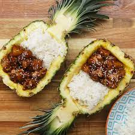

|

|
- 1 large pineapple
- 2 tablespoons peanut or vegetable oil
- 6 boneless chicken thighs, cut into bite-size cubes
- 1 teaspoon salt
- 1 teaspoon pepper
- 1 tablespoon hoisin sauce
- 1 tablespoon soy sauce
- 1 tablespoon brown sugar
- 1 tablespoon garlic paste
- ½ cup chicken stock
- cooked rice, for serving
- sesame seed, for garnish
|